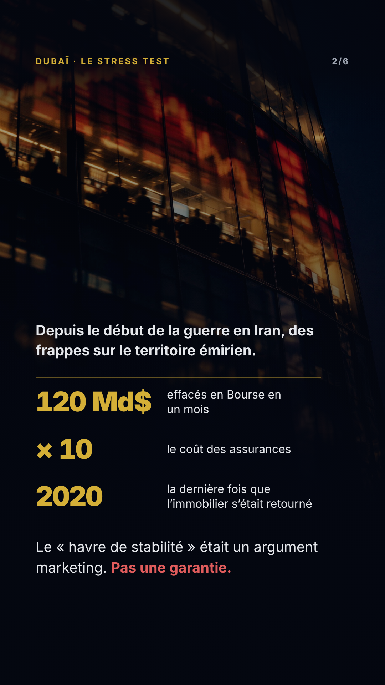

Dubaï, le stress test
Les 6 stories dans l'ordre de publication. Même grading, même grille,
même en-tête. Les repères sont posés à l'échelle : aucun texte ne les franchit.
160 px / 1620 px — zones mortes des stickers Instagram
1/6 · Ouverture
texte 160→1620px · AA 7.84:1 · 1376 ko

2/6 · Le relevé
texte 160→1620px · AA 5.61:1 · 1136 ko
3/6 · Démonstration
texte 160→1620px · AA 6.96:1 · 1554 ko
4/6 · Démonstration
texte 160→1620px · AA 5.61:1 · 1043 ko
5/6 · Démonstration
texte 160→1620px · AA 7.9:1 · 1379 ko
6/6 · CTA CODEX
texte 160→1620px · AA 6.6:1 · 1466 ko